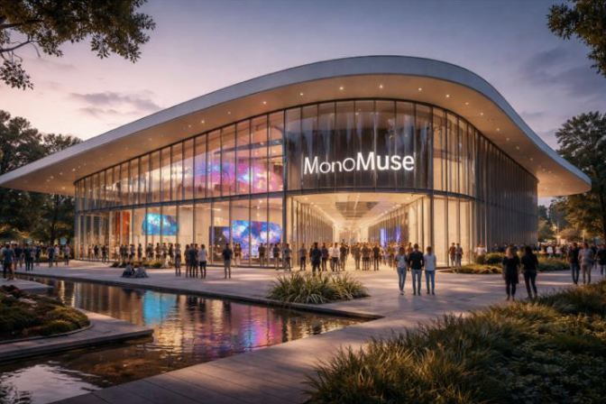

Mission Statement
At MonoMuse, our mission is to foster a deeper understanding and appreciation of the dynamic relationship between art and technology. We are committed to showcasing innovative works that challenge traditional boundaries and inspire creativity in all its forms. Through our exhibitions, educational programs, and community engagement initiatives, we aim to create a space where visitors can explore the transformative power of digital art and its impact on culture, society, and the human experience.
Who We Serve
MonoMuse serves a diverse audience of art enthusiasts, technology innovators, students, educators, and the general public. We welcome visitors of all ages and backgrounds who are interested in exploring the intersection of art and technology. Our exhibitions and programs are designed to engage both seasoned art lovers and those new to the world of digital creativity, fostering a sense of curiosity and discovery for everyone who walks through our doors.
Milestones
- 2016: Monomuse opens its doors with its first exhibition on digital storytelling.
- 2018: Launch of the Interative Media Lab, allowing visitors to experiment with creative coding.
- 2023: Expansion of the museum to space to include a new wing dedicated to virtual reality art.
Getting Here
123 Street Avenue, Pittsburgh, PA 15212
Parking available on-site. Accessible via bus routes 61A, 61B, 61C, 61D, or 54.